|
|
|
Before you read this page - my camera is awful. It's a replacement
while my real one is getting fixed, and I can't use it. The video it
better. I'll make one soon. Well here's the story from the long
weekend. We went to chicksands for a bit which was quite fun except
for sustaining a bad injury. There is a new smaller 8 pack whtich is
fun. 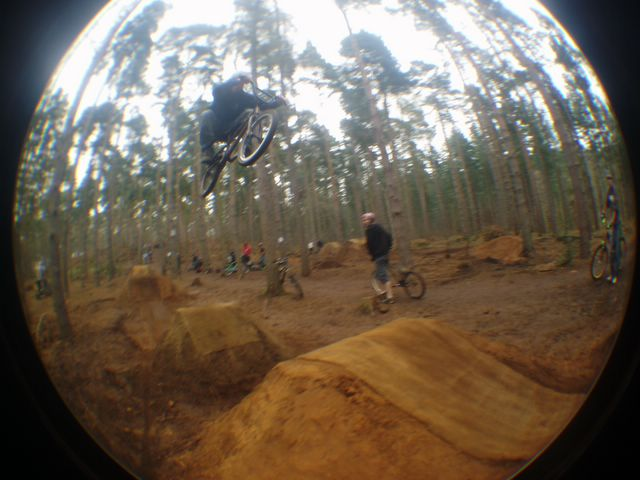 Tim boost 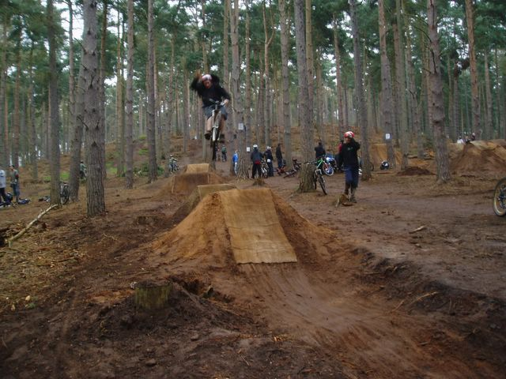 John 1 hander 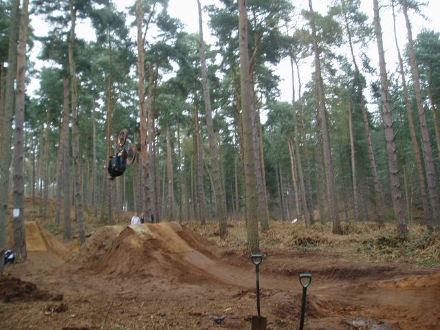 Glen Coe flip 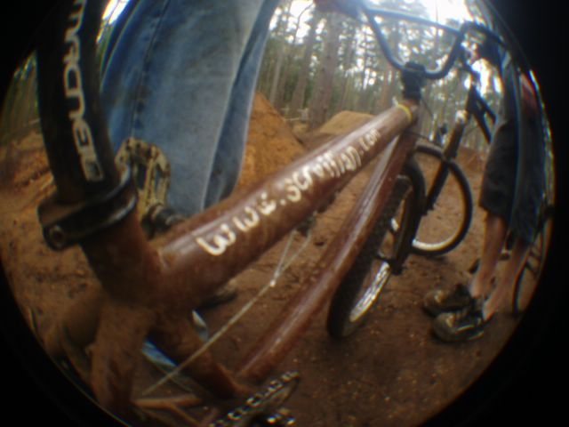 Tim's bike. He wants to swap it for a trails frame with 14mm rear dropouts 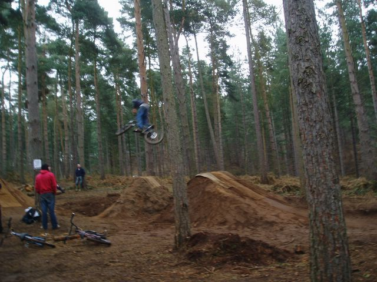 360 wooooooooo 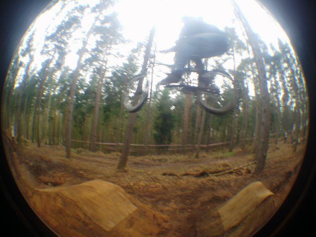 Tobogan. Might be Tim but I don't think so. 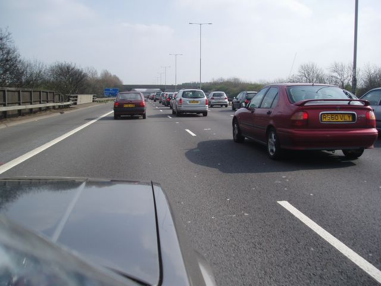 This is thanks to someone that said Woburn was at junction 16 not junction 13 on woburntrails.co.uk annoying. 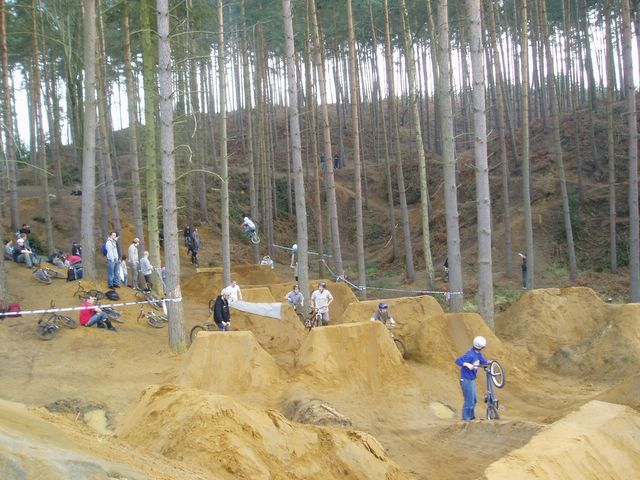 Fadeaway pete. Good table. 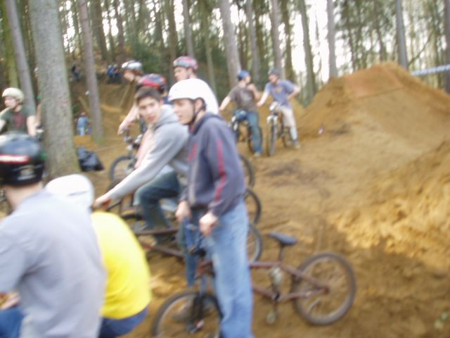 We met Yak. He was really friendly. 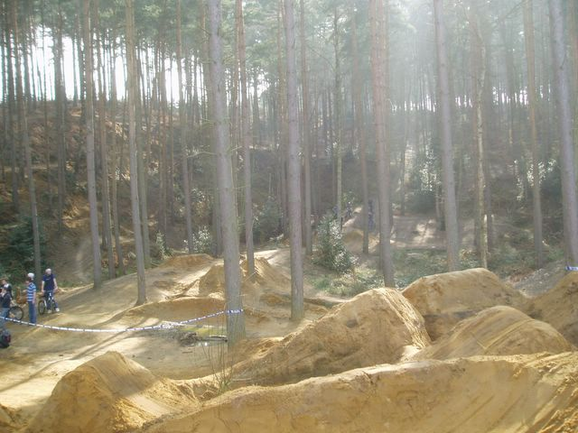 Woburn is a really nice place. A really good location. Sun coming in, super tall trees and the atmosphere was so relaxed, with no attitude. 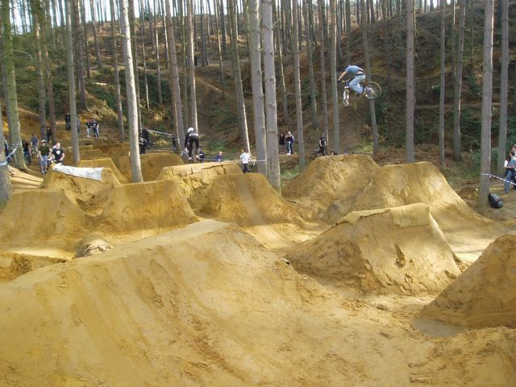 That is high. 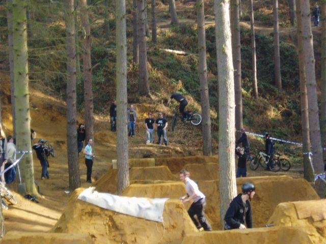 Liam? kickout 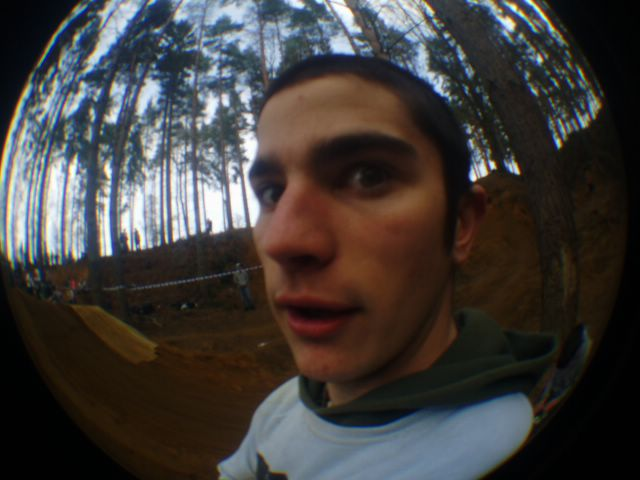 Then I met aiden. He was also really friendly. 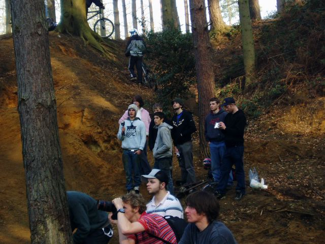 How many people can you name in this picture. I can do 7.5. Answers in the book. 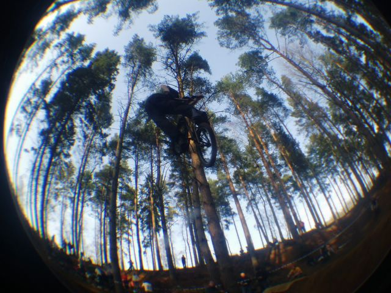 Good turndown 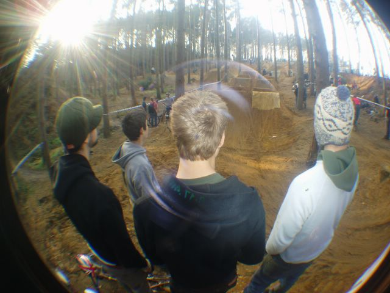 Poll and pipe were there and were also friendly. Good to see you guys again. 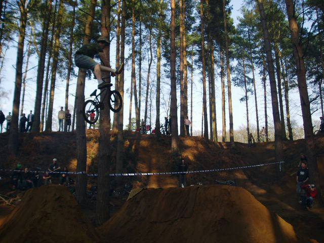 Gav was doing so rad stunts which I kept missing so you'll have to make do with this, which is still rad. 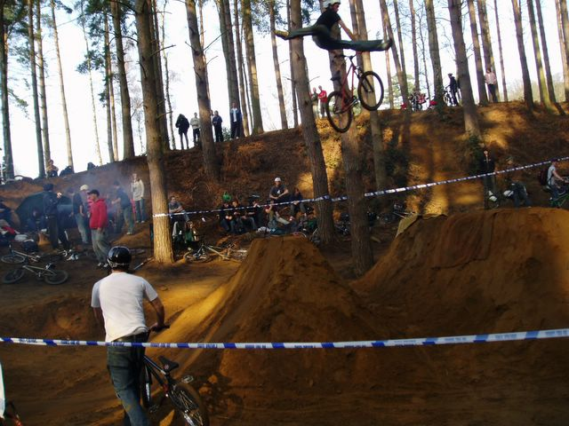 This is probably Elliot, guessing from the pictures I have seen of him before. Anyhow it's mega clicked. 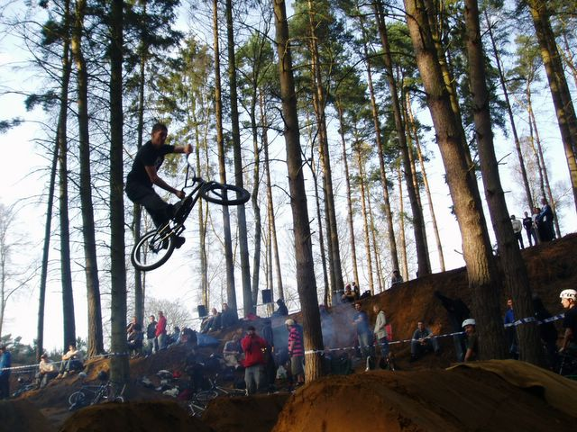 Liam, halfway between an xup and table I think. Matt Jones was doing tables to turndowns which I didn't get on camera but I think I got a video. 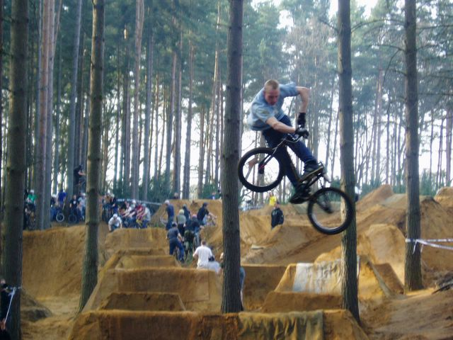 This was my favorite stunt of the day. Over Sam from Derelict BMX with a big lookback transfer thing. 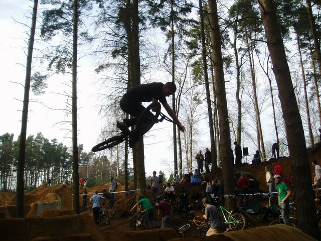 Liam table 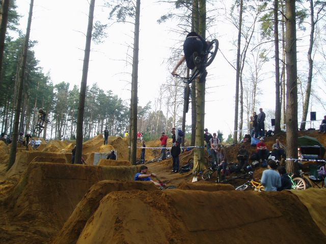 Someone 360. 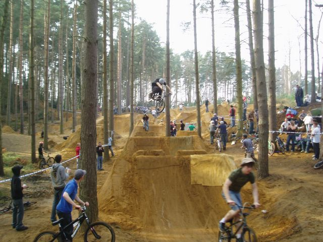 Someone high 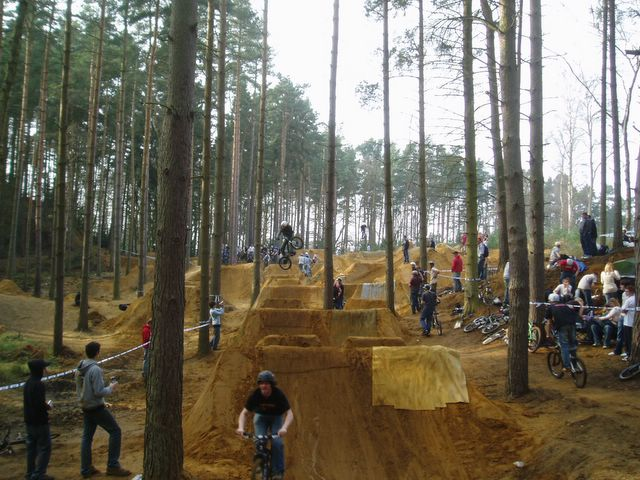 Someone mid pack 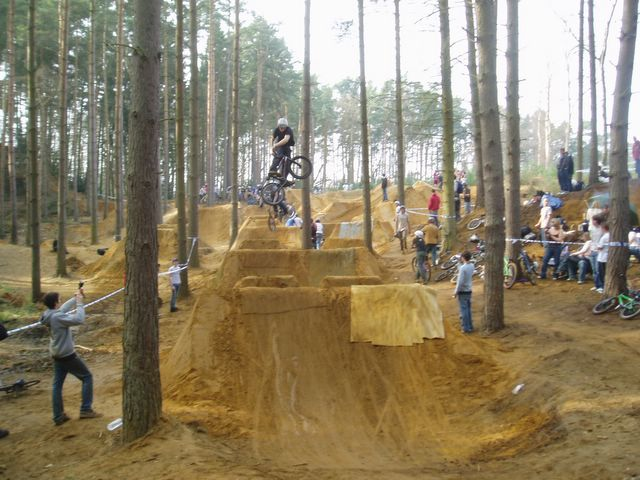 Someone turndown. Sorry I don't know the names 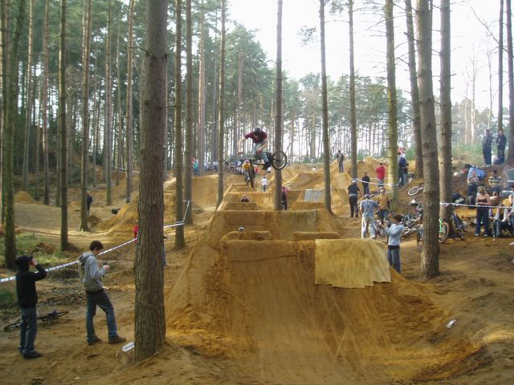 Kickout. 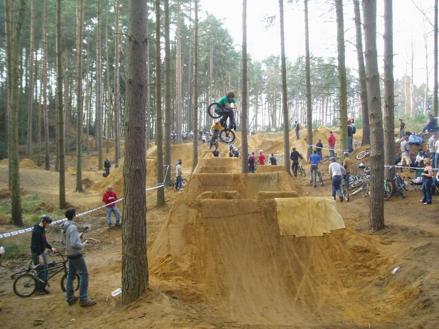 Iain from Derelict BMX team was there. So was Dave. He said hello and was very friendly too. There were loads of kids there with derelict stickers and they were all too good. 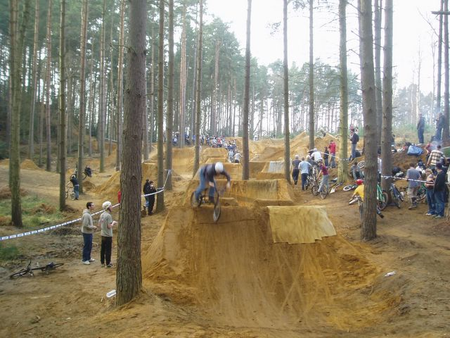 Just to prove that Tim did make it through. He hung up the last even though it is a short jump. Poll said that these jumps make no sense. 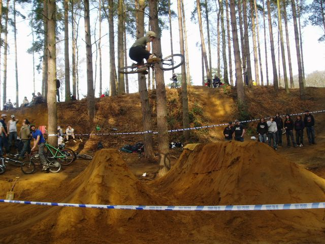 Mountain bike kickout. 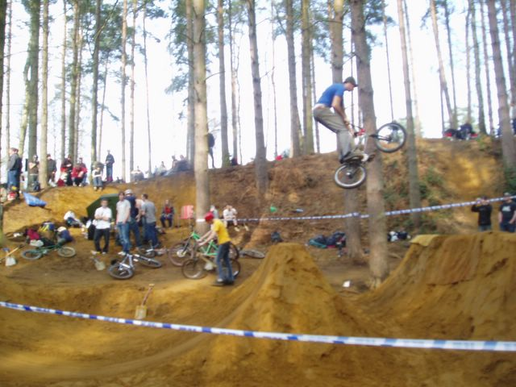 Poll style 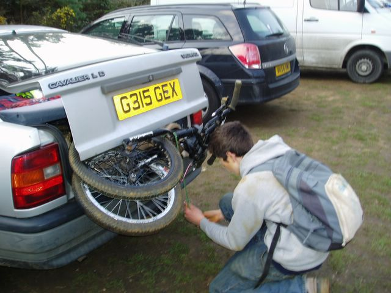 Yak packing his bike into the car. You can see how yellow he is. By the end of the day most people were pretty yellow. Becky still has yellow dirt on her coat. |